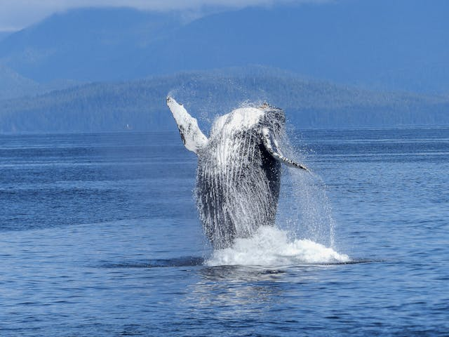

Nós somos a Sea Sentinels, uma organização não governamental dedicada à proteção, preservação e restauração dos oceanos do mundo. Fundada por um grupo de apaixonados pelo meio ambiente e pela vida marinha, nossa missão é promover a sustentabilidade dos oceanos e garantir que suas riquezas e beleza possam ser apreciadas pelas gerações futuras.

Nossa missão é proteger e restaurar a saúde dos oceanos através de iniciativas de conservação, educação e ação direta. Acreditamos que os oceanos são vitais para a saúde do nosso planeta, fornecendo oxigênio, regulando o clima e sustentando uma biodiversidade incomparável. Nosso trabalho é guiado pela paixão pelo mar e pela convicção de que juntos podemos fazer a diferença.
Junte-se a nós e ajude a preservar os mares das atividades humanas. Cada ação conta para garantir um futuro saudável para nossos oceanos. Venha ser parte dessa onda de mudança e faça a diferença hoje mesmo!
Saiba mais
1- O aquecimento global é uma das maiores ameaças ambientais que a humanidade enfrenta hoje. Causado principalmente pela emissão de gases de efeito estufa, como dióxido de carbono (CO₂) e metano (CH₄), este fenômeno está tendo um impacto profundo nos oceanos. As consequências são diversas e abrangem desde o aumento da temperatura da água até a acidificação dos mares, afetando ecossistemas marinhos, a biodiversidade e a vida humana.

3- A degradação da vida marítima é uma das crises ambientais mais preocupantes do nosso tempo. Os oceanos, que cobrem mais de 70% da superfície do planeta, são essenciais para a manutenção da vida na Terra. Eles regulam o clima, produzem oxigênio e sustentam uma biodiversidade imensa. No entanto, diversas atividades humanas estão colocando em risco a saúde dos ecossistemas marinhos e a sobrevivência de inúmeras espécies.

2- Os mares e oceanos do nosso planeta estão enfrentando uma crise sem precedentes devido à poluição. Este problema crescente não apenas ameaça a saúde dos ecossistemas marinhos, mas também impacta diretamente a vida humana, as economias globais e a biodiversidade.
4- As enchentes são fenômenos naturais que têm se tornado cada vez mais frequentes e severos devido ao impacto combinado de mudanças climáticas e atividades humanas. Quando falamos de enchentes relacionadas aos mares, estamos nos referindo principalmente ao aumento do nível do mar e à intensificação de tempestades e eventos climáticos extremos.
1- O aquecimento global é um desafio complexo e urgente. A proteção dos oceanos é fundamental para a saúde do planeta e para o bem-estar das futuras gerações. Juntos, podemos tomar medidas significativas como redução de emissões, proteção e restauração de ecossistemas, educação e conscientização, etc, para combater essa crise e preservar os mares para todos.
3- Proteger e restaurar a vida marítima não é apenas uma questão ambiental, mas uma necessidade para garantir um futuro sustentável e próspero para todos, os oceanos são essenciais para a saúde do nosso planeta e para a sobrevivência de inúmeras espécies, incluindo a nossa. E podemos ajudar com a redução da poluição, pesca sustentável, mitigação das mudanças climáticas e a proteção de habitats.
2- A poluição nos mares é um problema global que exige a colaboração de governos, empresas, ONGs e cidadãos. Somente através de um esforço conjunto podemos preservar a saúde dos nossos oceanos e garantir um futuro sustentável para todas as formas de vida que dependem deles.
4- As enchentes relacionadas aos mares são um problema crescente que exige uma resposta urgente e coordenada, a adoção de medidas preventivas e adaptativas é essencial para enfrentar este desafio e proteger nosso futuro coletivo. Assim como redução de emissões, planejamento urbano e infraestrutura resiliente, restauração de habitats naturais e educação e conscientização.
Mantenha-se atualizado com os nossos boletins informativos regulares. Esteja ciente, seja um Sentinela.
Saiba mais